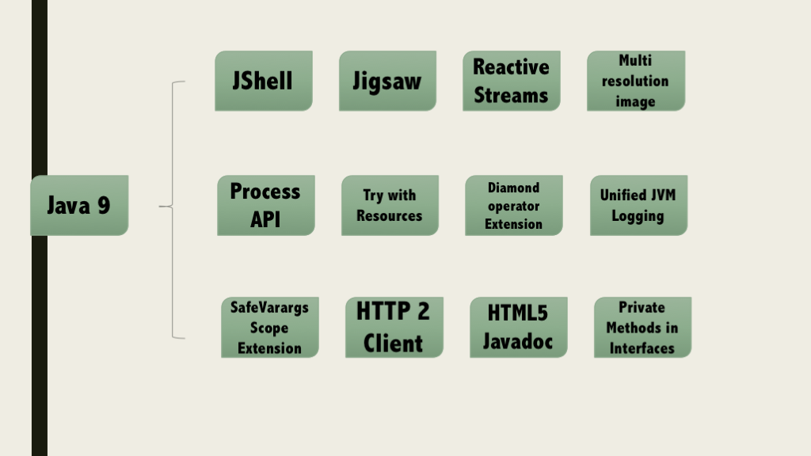

Java 9 包含了丰富的特性集。
虽然Java 9没有新的语言概念，但是有开发者感兴趣的新的API和诊断命令。
我们将快速的，着重的浏览其中的几个新特性；

模块化是一个很通用的概念。在软件中，模块化可以运用到编写和实现一个程序和计算系统，他们都是作为独立的模块，而不是作为一个单一的和完整的设>计。
Java 9中主要的变化是已经实现的模块化系统。模块化的引入使得JDK可以在更小的设备中使用。采用模块化系统的应用程序只需要这些应用程序所需的那部分JDK模块，而非是整个JDK框架了。模块化系统也可以将公共的类封装到一个模块中。因此一个封装在模块中的定义为public的类不能再任何地方使用，除非一个模块显式的定义了这个模块。由于Java 9的这个变化，Java内部的API（例如com.sun.*）默认情况下是不能使用的。
简而言之，所有的模块将需要在所谓的module-info.java文件中进行描述，这个文件是位于Java代码结构的顶层
module me.aboullaite.java9.modules.car { requires me.aboullaite.java9.modules.engines;//依赖的模块 exports me.aboullaite.java9.modules.car.handling;//在模块中导出包 }
我们的模块car（汽车）需要依赖+模块engine（引擎）和需要导出handling（操纵）包。
需要更多深入的例子可以查看OpenJDK中项目Jigsaw：模块化系统快速入门
你可能问：“REPL是什么”?REPL是一种快速运行语句的命令行工具。
在Java中，如果你想执行一个简单的语句，我们要么创建一个带main方法的类，要么创建一个可以执行的Test类。当你正在启动Java程序的时候，如果你想执行某些语句并且想立刻看见执行结果，上面的做法看起来不是那么有用了。
JShell试图去解决这个问题。Java开发者可以利用JShell在没有创建类的情况下直接声明变量，计算表达式，执行语句。JShell也可以从文件中加载语句或者将语句保存到文件中。并且JShell也可以是tab键进行自动补全的特性。
在Java 9之前，Java只能利用一些实用方法（例如：Collections.unmodifiableCollection(Collection<? extends T> c)）创建一个不可修改视图的集合。例如，我们可以在Java 8中使用一条如下所示的语句，创建一个Collection的不可修改的视图。虽然这是最简单的创建方式，但是看起来很糟糕！不是吗？
Map<String, String> immutableMap = Collections.unmodifiableMap( new HashMap<String, String>() {{ put("key1", "Value1"); put("key2", "Value2"); put("key3", "Value3"); }});
现在，Java 9引入了一些有用的工厂方法来创建不可修改的集合。我们现在在Java 9中创建不可修改的Map集合，如下所示。
Map<String, String> immutableMap = Map.of("key1", "Value1", "key2", "Value2"，"key3", "Value3");
下面是工厂方法的例子：
// empty immutable collections 不可修改的空集合 List<String> emptyImmutableList = List.of(); Set<String> emptyImmutableSet = Set.of(); Map emptyImmutableMap = Map.of(); // immutable collections 不可修改的集合 List<String> immutableList = List.of("one", "two"); Set<String> immutableSet = Set.of("value1", "value2"); Map<String, String> immutableMap = Map.of("key1", "Value1", "key2", "Value2", "key3", "Value3");
Java 8的接口引入了默认方法和静态方法。虽然Java 8首次计划实现接口的私有方法，却是在Java 9中实现。默认方法和静态方法可以共享接口中的私有方法，因此避免了代码冗余，这也使代码更加清晰。如果私有方法是静态的，那这个方法就属于这个接口的。并且没有静态的私有方法只能被在接口中的实例调用。
interface InterfaceWithPrivateMethods { private static String staticPrivate() { return "static private"; } private String instancePrivate() { return "instance private"; } default void check() { String result = staticPrivate(); InterfaceWithPrivateMethods pvt = new InterfaceWithPrivateMethods() { // anonymous class 匿名类 }; result = pvt.instancePrivate(); } }
JDK9中的Flow API对应响应式流规范，响应式流规范是一种事实标准。JEP 266包含了一组最小接口集合，这组接口能捕获核心的异步发布与订阅。希望在未来第三方能够实现这些接口，并且能共享其方式。
java.util.concurrent.Flow包含以下4个接口：
Flow.Processor（处理器）
Flow.Publisher（发布者）
Flow.Subscriber（订阅者）
Flow.Subscription（订阅管理器）
目标是定义多分辨率图像API，这样开发者就能很容易的操作和展示不同分辨率的图像了。
这个新的API定义在java.awt.image包中，这个API能给我们带来如下的帮助：
将不同分辨率的图像封装到一张（多分辨率的）图像中，作为它的变体。
获取这个图像的所有变体。
获取特定分辨率的图像变体–表示一张已知分辨率单位为DPI的特定尺寸大小的逻辑图像，并且这张图像是最佳的变体。
基于当前屏幕分辨率大小和运用的图像转换算法，java.awt.Graphics类可以从接口MultiResolutionImage获取所需的变体。java.awt.image.AbstractMultiResolutionImage类提供了ava.awt.image.AbstractMultiResolutionImage 默认实现。AbstractMultiResolutionImage的基础实现是java.awt.image.BaseMultiResolutionImage。
迄今为止，通过Java来控制和管理操作系统的进程的能力有限。例如，为了做一些简单的事情，像获取进程的PID，你要么需要访问本地代码，要么使用某种临时解决方案。不仅如此，每个（系统）平台需要一个不同实现来确保你能获得正确的结果。
在Java 9中，期望代码能获取Linux PID，现在是如下方式：
public static void main(String[] args) throws Exception { Process proc = Runtime.getRuntime().exec(new String[]{ "/bin/sh", "-c", "echo $PPID" }); if (proc.waitFor() == 0) { InputStream in = proc.getInputStream(); int available = in.available(); byte[] outputBytes = new byte[available]; in.read(outputBytes); String pid = new String(outputBytes); System.out.println("Your pid is " + pid); } }
你可以变换如下的方式（同样支持所有的操作系统）：
System.out.println("Your pid is " + Process.getCurrentPid());
在Java 7中，try-with-resouces语法要求为每一个资源声明一个新的变量，而且这些资源由try-with-resources语句进行管理。
在就Java 9中，有另外一个改进：如果一个资源被final或者等效于final变量引用，则在不需要声明一个新的变量的情况下，try-with-resources就可以管理这个资源。
MyAutoCloseable mac = new MyAutoCloseable(); try (mac) { // do some stuff with mac } try (new MyAutoCloseable() { }.finalWrapper.finalCloseable) { // do some stuff with finalCloseable }
Java 7给出的钻石操作符使我们编写代码更简单了。在下面的例子中，你可以看见Java 7中List（列表）的可读性更强了，并且使代码更加的简洁了。
List<String> preJava7 = new ArrayList<String>();//java 7 之前的写法 List<String> java7 = new ArrayList<>();//java 7 之后的写法
但是Java 7中钻石操作符不允许在匿名类上使用。但在Java 9中改善了这一情况，允许钻石操作符在匿名类上使用。下面的例子只有在Java 9中才能通过编译。
List<String> list = new ArrayList<>(){ };
注释@Deprecated可以标记Java API。注释@Deprecated有很多种含义，例如它可以表示在不远的将来的某个时间，被标记的API将会被移除。它也可以表示这个API已经被破坏了，并不应该再被使用。它还有其它很多含义。为了提供更多有关@Deprecated的信息，@Deprecated添加了forRemoval元素和since元素。
Java SE 9 中也提供了扫描jar文件的工具jdeprscan。这款工具也可以扫描一个聚合类，这个类使用了Java SE中的已废弃的API元素。 这个工具将会对使用已经编译好的库的应用程序有帮助，这样使用者就不知道这个已经编译好的库中使用了那些已废弃的API。
如今，我们很难知道导致JVM性能问题和导致JVM崩溃的根本原因。解决这个问题的一个方法是对所有的JVM组件引入一个单一的系统，这些JVM组件支持细粒度的和易配置的JVM日志。目前，不同的JVM组件对于日志使用的是不同的机制和规则，这使得JVM难以进行调试
直到Java 8，@SafeVarargs才能在静态方法、final方法和构造器上使用。但是这些方法或者构造器是不能被覆盖的。这些方法中缺少另一个不能被覆盖的方法，这个方法就是私有方法。Java 9可以将@SafeVarargs添加到私有方法上。下面的例子在Java 9中是正确的，但是在Java 8中就会抛出编译时错误： 注释@SafeVarargs不能在非final的实例方法iAmSafeVaragrsMethod上使用。
@SafeVarargs private void iAmSafeVaragrsMethod(String... varagrgs) { for (String each: varagrgs) { System.out.println(each); } }
Java 9采用了全新的HTTP客户端API，这些API支持HTTP/2协议和WebSocket协议，并且替换了遗留的HTTPURLConnection API。这些改变并不应该在Java 9中完成。这些API可以从Incubator（孵化器）模块中获取。因此在默认情况下，这个模块是不能根据classpath获取的，需要使用--add-modules命令选项配置这个模块，将这个模块添加到classpath中。
我们创建一个HTTPRequest请求和获取异步的响应:
URI testPageURI = new URI("http://127.0.0.1:8080/testPage"); CompletableFuture<HttpResponse> nonBlockingResponse = HttpRequest .create(testPageURI) .GET().responseAsync(); int tries = 0; while(!nonBlockingResponse.isDone() && tries++ < 5) { Thread.sleep(5); } if (nonBlockingResponse.isDone()) { HttpResponse response = nonBlockingResponse.get(); System.out.println("status code : " + response.statusCode() + " --> " + response.body(HttpResponse.asString())); } else { nonBlockingResponse.cancel(true); System.out.println("Cancelling, could not get response"); }
Java 8以及之前的版本生成的Java帮助文档是在HTML 4中，而HTML 4已经是很久的标准了。在Java 9中，javadoc命令行中选项部分添加了输出选项，这个选项的值要么是HTML 4，要么是HTML 5。现在HTML 4是默认的输出标记语言，但是在之后发布的JDK中，HTML 5将会是默认的输出标记语言。Java帮助文档还是由三个框架组成的结构构成，这是不会变的，并且以HTML 5输出的Java帮助文档也保持相同的结构。
保留下划线字符。变量不能被命名为_；
废弃Applet API；
javac不再支持Java1.4以及之前的版本；
废弃Java浏览器插件；
栈遍历API–栈遍历API能过滤和迟访问在堆栈跟踪中的信息。
在http://openjdk.java.net/projects/jdk9/上找到所有功能的完整列表。